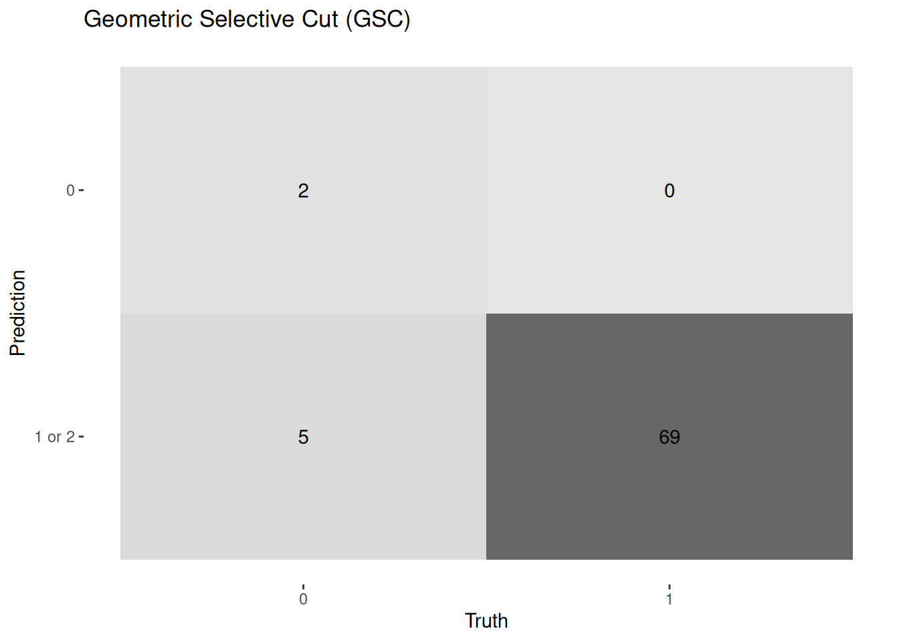

[1] "deter_fire_shp_2017.shp" "deter_fire_shp_2018.shp"
[3] "deter_fire_shp_2019.shp" "deter_fire_shp_2020.shp"
[5] "deter_fire_shp_2021.shp" "deter_fire_shp_2022.shp"
[7] "deter_fire_shp_2023.shp" "deter_logging_shp_2017.shp"
[9] "deter_logging_shp_2018.shp" "deter_logging_shp_2019.shp"
[11] "deter_logging_shp_2020.shp" "deter_logging_shp_2021.shp"
[13] "deter_logging_shp_2022.shp" "deter_logging_shp_2023.shp"
[15] "prodes_deforestation_shp_2017.shp" "prodes_deforestation_shp_2018.shp"
[17] "prodes_deforestation_shp_2019.shp" "prodes_deforestation_shp_2020.shp"
[19] "prodes_deforestation_shp_2021.shp" "prodes_deforestation_shp_2022.shp"
[21] "prodes_deforestation_shp_2023.shp"Accuracy analysis of deforestation and degradation activity data
1 Introduction
There are a number of increasingly reliable, coherent and robust procedures for mapping and analyzing the dynamics of land use and occupation to satisfy a range of information needs for socio-environmental planning. These mappings, at a regional level, are carried out using remotely sensed images, which currently allow for daily analysis and high spatial resolution, making it essential to use robust and transparent statistical approaches to assess accuracy and estimate the area of change to ensure the integrity of information on land use changes (Olofsson et al. 2014).
Accuracy analysis between mappings from different sources is the most common methodology for estimating hit and miss rates in thematic products derived from remote sensing. This approach involves comparing a mapped element with an ideal mapping result. To do this, a percentage of the mapping (samples) are selected to be validated and compared with the ideal mapping to calculate accuracy. The number and distribution of samples were generated according to the recommendations described in the works by Adami et al. 2012 and Olofsson et al. 2014.
In this analysis, we calculated, for the years 2017 to 2023 in the state of Pará, the accuracy of the mapping and the minimum number of sample points needed per mapping class: clear-cut deforestation (CR) and forest degradation, subdivided into: disorganized selective logging (CSD), geometric selective logging (CSG) and forest burn scar (CQF), in relation to the (ideal) reference mapping made by experts in photointerpretation of high spatial resolution images.
2 Materials and Methods
As stipulated in the TR, IPAM shared data classified as ‘0’ and ‘1’ for deforestation and degradation activities in raster and vector format. The vectors (21 shapefiles in total) are derived from the raster data, as it was generated by the raster vectorization operation. The vector data that was used in the validation process is listed below:
Com base nestes arquivos as classes de atividades consideradas foram:
| Contractor Files | Class | Equivalent to |
|---|---|---|
| deter_fire… | Fire | Forest – Burned Area Scar in Forest (CQF) |
| deter_logging… | Logging | Forest – Selective logging (CSD-1) or geometric (CSG-2) |
| prodes_deforestation… | Deforestation | Forest – Clear-cutting (CR) |
In all the vectors, their attribute tables contained only two fields: “count”, which represents the number of pixels in the polygon’s geometry; and “label”, a numeric field where ‘1’ represents the mapping class to be validated (CR, CSD, CSG or CQF) and ‘0’ represents the other classes combined as one (mainly native vegetation and water bodies). For logging data only, the label is numbered “1” for CSD and “2” for CSG.
All the shapefiles had their geometry converted to “Singlepolygon”, which individualizes the feature with more than one associated geometry, leaving the feature associated with only one geometry. After this operation, the areas of the polygons were recalculated in the QGIS software, in the field calculator, with the “$area” function. We generated the centroids (geographical coordinates of the center) of all the deforestation and degradation polygons, which facilitates the GIS operations for the statistical calculations, in ‘R’ language, of the minimum number of samples per class per year to be validated. The Table 2 displays the result of these operations.
| Class | Nº Polygons | Area (ha) |
|---|---|---|
| deforestation_2017 | 34,730 | 296,009 |
| deforestation_2018 | 36,031 | 295,513 |
| deforestation_2019 | 38,084 | 484,068 |
| deforestation_2020 | 41,327 | 504,779 |
| deforestation_2021 | 45,674 | 560,919 |
| deforestation_2022 | 34,544 | 492,304 |
| deforestation_2023 | 33,883 | 333,670 |
| fire_2017 | 2,121 | 438,550 |
| fire_2018 | 3,656 | 891,603 |
| fire_2019 | 324 | 14,903.9 |
| fire_2020 | 2,163 | 211,999 |
| fire_2021 | 2,748 | 393,183 |
| fire_2022 | 643 | 45,482.7 |
| fire_2023 | 2,344 | 350,464 |
| logging_2017 | 97 | 40,717.6 |
| logging_2018 | 71 | 42,030.9 |
| logging_2019 | 62 | 28,901.2 |
| logging_2020 | 237 | 111,370 |
| logging_2021 | 364 | 118,286 |
| logging_2022 | 277 | 114,618 |
| logging_2023 | 194 | 98,258.9 |
The accuracy metrics followed what is required by the ART/TREES standard 1, guided by the recommendations of the works by Adami et al. 2012 and Olofsson et al. 2014, the stratified sampling method was adopted to determine the number of validation samples for each class per year, this method being consistent with calculating the proportion of each stratum in relation to the total population and obtaining an ideal number of samples. The minimum number of samples (n) per class for validation was calculated by applying Equation 1.
\[ n = \frac{(Z\alpha/2)^2 \times p \times q}{e^2} \tag{1}\]
Where:
\(n\) = sample size
\(Z(\alpha/2)\) = critical value corresponding to the degree of confidence (95%)
\(p\) = population proportion of individuals belonging to a given category
\(q\) = population proportion of individuals not belonging to a given category (1 - p)
\(e\) = margin of error (2.5%)
Or as defined by Olofsson et al. 2014:
\[ n = (\frac{\Sigma W_{i}S_{i}}{S(\tilde{O})})^2 \tag{2}\]
Where, n = sample size,
\(W_{i}\) area of class i,
\(S_{i}\) is the standard deviation of stratum i, \(S_{i} = \sqrt{U{i}(1 - U_{i})}\)
\(S(\tilde{O})\) is the standard error
Thus, the number of sample points for each disturbance category was defined as Table 3 for all years, Table 4 for the year 2017, Table 5 for 2018, Table 6 for 2019, Table 7 for 2020, Table 8 for 2021, Table 9 for 2022 and Table 10 for 2023.
| Class | Nº Polygons | p | q | Average Sample No. / Year | Sample No. Total Calculated |
|---|---|---|---|---|---|
| Deforestation | 264,273 | 0.946 | 0.054 | 314.08 | 2198.53 |
| Fire | 13,999 | 0.049 | 0.951 | 288.85 | 2021.96 |
| CSD - 1 | 792 | 0.003 | 0.997 | 17.60 | 123.21 |
| CSG - 2 | 510 | 0.002 | 0.998 | 10.47 | 73.26 |
| Class - 2017 | Nº Polygons | p | q | Average Sample No. / Year | Sample No. Total Calculated |
|---|---|---|---|---|---|
| Deforestation | 34,730 | 0.940 | 0.060 | 346.830 | 347 |
| Fire | 2,121 | 0.057 | 0.943 | 332.588 | 332 |
| CSD - 1 | 56 | 0.002 | 0.998 | 9.302 | 10 |
| CSG - 2 | 41 | 0.001 | 0.999 | 6.813 | 7 |
| Class - 2018 | Nº Polygons | p | q | Average Sample No. / Year | Sample No. Total Calculated |
|---|---|---|---|---|---|
| Deforestation | 36,031 | 0.906 | 0.094 | 522.178 | 523 |
| Fire | 3,656 | 0.092 | 0.908 | 513.240 | 514 |
| CSD - 1 | 47 | 0.001 | 0.999 | 7.258 | 8 |
| CSG - 2 | 24 | 0.001 | 0.999 | 3.708 | 4 |
| Class - 2019 | Nº Polygons | p | q | Average Sample No. / Year | Sample No. Total Calculated |
|---|---|---|---|---|---|
| Deforestation | 38,084 | 0.990 | 0.010 | 61.054 | 62 |
| Fire | 324 | 0.008 | 0.992 | 51.331 | 52 |
| CSD - 1 | 31 | 0.001 | 0.999 | 4.949 | 5 |
| CSG - 2 | 31 | 0.001 | 0.999 | 4.949 | 5 |
| Class - 2020 | Nº Polygons | p | q | Average Sample No. / Year | Sample No. Total Calculated |
|---|---|---|---|---|---|
| Deforestation | 41,327 | 0.945 | 0.055 | 318.844 | 318 |
| Fire | 2,163 | 0.049 | 0.951 | 289.006 | 289 |
| CSD - 1 | 191 | 0.004 | 0.996 | 26.731 | 27 |
| CSG - 2 | 46 | 0.001 | 0.999 | 6.459 | 7 |
| Class - 2021 | Nº Polygons | p | q | Average Sample No. / Year | Sample No. Total Calculated |
|---|---|---|---|---|---|
| Deforestation | 45,674 | 0.936 | 0.064 | 367.071 | 365 |
| Fire | 2,748 | 0.056 | 0.944 | 326.719 | 327 |
| CSD - 1 | 108 | 0.002 | 0.998 | 13.577 | 14 |
| CSG - 2 | 256 | 0.005 | 0.995 | 32.084 | 33 |
| Class - 2022 | Nº Polygons | p | q | Average Sample No. / Year | Sample No. Total Calculated |
|---|---|---|---|---|---|
| Deforestation | 34,544 | 0.974 | 0.026 | 155.316 | 152 |
| Fire | 643 | 0.018 | 0.982 | 109.423 | 110 |
| CSD - 1 | 216 | 0.006 | 0.994 | 37.209 | 38 |
| CSG - 2 | 61 | 0.002 | 0.998 | 10.554 | 11 |
| Class - 2023 | Nº Polygons | p | q | Average Sample No. / Year | Sample No. Total Calculated |
|---|---|---|---|---|---|
| Deforestation | 33,883 | 0.930 | 0.070 | 398.476 | 398 |
| Fire | 2,344 | 0.064 | 0.936 | 370.124 | 130 |
| CSD - 1 | 143 | 0.004 | 0.996 | 24.039 | 25 |
| CSG - 2 | 51 | 0.001 | 0.999 | 8.595 | 9 |
3 Basic Statistics by classes
| class_valid | nº pol 2017 | % 2017 | nº pol 2018 | % 2018 | nº pol 2019 | % 2019 | nº pol 2020 | % 2020 | nº pol 2021 | % 2021 | nº pol 2022 | % 2022 | nº pol 2023 | % 2023 |
|---|---|---|---|---|---|---|---|---|---|---|---|---|---|---|
| 1-true | 237 | 0,683 | 330 | 0,631 | 44 | 0,71 | 194 | 0,61 | 270 | 0,74 | 104 | 0,684 | 239 | 0,601 |
| 1-false | 102 | 0,294 | 182 | 0,348 | 16 | 0,258 | 94 | 0,296 | 70 | 0,192 | 36 | 0,237 | 139 | 0,349 |
| 0-veg | 8 | 0,023 | 10 | 0,019 | 2 | 0,032 | 30 | 0,094 | 22 | 0,06 | 7 | 0,046 | 11 | 0,028 |
| 2-cs | 0 | 0 | 1 | 0,002 | 0 | 0 | 0 | 0 | 3 | 0,008 | 5 | 0,033 | 9 | 0,023 |
| 3-cqf | 0 | 0 | 0 | 0 | 0 | 0 | 0 | 0 | 0 | 0 | 0 | 0 | 0 | 0 |
| 4-others | 0 | 0 | 0 | 0 | 0 | 0 | 0 | 0 | 0 | 0 | 0 | 0 | 0 | 0 |
| Total | 347 | 1 | 523 | 1 | 62 | 1 | 318 | 1 | 365 | 1 | 152 | 1 | 398 | 1 |
3.1 Shallow Cut (CR)
| class_valid | 1-true | 1-false | 0-veg | 2-cs | 3-cqf | 4-others | Total |
|---|---|---|---|---|---|---|---|
| nº pol 2017 | 237 | 102 | 8 | 0 | 0 | 0 | 347 |
| nº pol 2018 | 330 | 182 | 10 | 1 | 0 | 0 | 523 |
| nº pol 2019 | 44 | 16 | 2 | 0 | 0 | 0 | 62 |
| nº pol 2020 | 194 | 94 | 30 | 0 | 0 | 0 | 318 |
| nº pol 2021 | 270 | 70 | 22 | 3 | 0 | 0 | 365 |
| nº pol 2022 | 104 | 36 | 7 | 5 | 0 | 0 | 152 |
| nº pol 2023 | 239 | 139 | 11 | 9 | 0 | 0 | 398 |
| TOTAL | 1418 | 639 | 90 | 18 | 0 | 0 | 2165 |
| % TOTAL | 0,654 | 0,295 | 0,0415 | 0,008 | 0 | 0 | 1 |
3.2 Burn Scar (CQF)
| class_valid | 3-true | 3-false | 0-veg | 2-cs | 1-cr | 4-others | Total |
|---|---|---|---|---|---|---|---|
| nº pol 2017 | 241 | 31 | 33 | 12 | 14 | 1 | 332 |
| nº pol 2018 | 431 | 0 | 19 | 5 | 59 | 0 | 514 |
| nº pol 2019 | 33 | 0 | 4 | 0 | 15 | 0 | 52 |
| nº pol 2020 | 231 | 0 | 0 | 0 | 55 | 3 | 289 |
| nº pol 2021 | 292 | 0 | 2 | 0 | 31 | 2 | 327 |
| nº pol 2022 | 92 | 0 | 0 | 1 | 17 | 0 | 110 |
| nº pol 2023 | 121 | 0 | 0 | 0 | 9 | 0 | 130 |
| TOTAL | 1441 | 31 | 58 | 18 | 200 | 6 | 1754 |
| % TOTAL | 0,822 | 0,018 | 0,033 | 0,01 | 0,114 | 0,003 | 1 |
3.3 Selective Cutting (SC)
3.3.1 CS Disordered
| class_valid | 2-true | 2-false | 0-veg | 1-cr | 3-cqf | 4-others | Total |
|---|---|---|---|---|---|---|---|
| nº pol 2017 | 6 | 3 | 1 | 0 | 0 | 0 | 10 |
| nº pol 2018 | 8 | 0 | 0 | 0 | 0 | 0 | 8 |
| nº pol 2019 | 4 | 0 | 0 | 1 | 0 | 0 | 5 |
| nº pol 2020 | 21 | 5 | 1 | 0 | 0 | 0 | 27 |
| nº pol 2021 | 270 | 70 | 22 | 3 | 0 | 0 | 365 |
| nº pol 2022 | 31 | 7 | 0 | 0 | 0 | 0 | 38 |
| nº pol 2023 | 20 | 5 | 0 | 0 | 0 | 0 | 25 |
| TOTAL | 360 | 90 | 24 | 4 | 0 | 0 | 478 |
| % TOTAL | 0,753 | 0,188 | 0,0502 | 0,008 | 0 | 0 | 1 |
3.3.2 CS Geometric
| class_valid | 2-true | 2-false | 0-veg | 1-cr | 3-cqf | 4-others | Total |
|---|---|---|---|---|---|---|---|
| nº pol 2017 | 7 | 0 | 0 | 0 | 0 | 0 | 7 |
| nº pol 2018 | 4 | 0 | 0 | 0 | 0 | 0 | 4 |
| nº pol 2019 | 4 | 1 | 0 | 0 | 0 | 0 | 5 |
| nº pol 2020 | 6 | 1 | 0 | 0 | 0 | 0 | 7 |
| nº pol 2021 | 31 | 0 | 0 | 2 | 0 | 0 | 33 |
| nº pol 2022 | 9 | 0 | 2 | 0 | 0 | 0 | 11 |
| nº pol 2023 | 8 | 1 | 0 | 0 | 0 | 0 | 9 |
| TOTAL | 69 | 3 | 2 | 2 | 0 | 0 | 76 |
| % TOTAL | 0,908 | 0,039 | 0,026 | 0,026 | 0 | 0 | 1 |
4 Validation Procedures
To validate the activity classes, the analysts pre-defined five reference mapping classes, each associated with a numerical value according to Table 16. This was done to make it easier to fill in the attribute table for the validation samples and then draw up the confusion matrices.
| Class | Value |
|---|---|
| FOREST/NATIVE VEG (VEG) | 0 |
| CLEAR-CUT (CR) | 1 |
| SELECTIVE CUT-CS | 2 |
| DISORDERLY CS (CSD) | 2.1 |
| GEOMETRIC CS (CSG) | 2.2 |
| BURN SCAR IN FOREST (CQF) | 3 |
| *OTHERS | 4 |
After the selection of sample points, presented in item 3, the polygons associated with each point were analyzed by the photointerpretation specialist, using monthly mosaics of high-resolution images from the Planet constellation as reference.
In the vector data of the samples selected for validation, two fields were created in the attribute table: clas_valid and label, as follows:
clas_valid ➞ this attribute represents the class defined by the analyst according to Table 16
label ➞ boolean data, where FALSE = 0, TRUE = 1. That is, label = 0 means WRONG ORIGINAL CLASS OF POLYGON (false positive), and label = 1 means TRUE POLYGON.
Examples of combinations:
label = 0 and clas_valid = ANY VALUE FROM Table 16, means NEGATIVE VALIDATION, ORIGINAL POLYGON = FALSE;
label = 1 and clas_valid = ANY VALUE FROM Table 16, means POSITIVE VALIDATION, ORIGINAL POLYGON = TRUE.
Since the original data comes from INPE’s mappings, the PRODES year was used as a reference period for the annual accuracy assessment of the mapped classes. The current year was considered as the period from August 1st of the previous year to July 31st of the current year. For example: deforestation for the year 2021 includes polygons detected between 08/01/2020 and 07/31/2021.
When conducting the validation, if the polygon selected for validation showed a mix of classes, the value of the clas_valid attribute that had the greatest area representation (>=50%) was filled in.
The validation of the 2017 CQF class presented the combination label = 0 & clas_valid = 3, where the burn scar was present before 08/01/2016, but was not identified in the current year’s photointerpretation, and therefore should be counted for the year 2016. See Figure 5 and Figure 6.
In the validation of selective logging, the combination label = 0 & clas_valid = 2 shows that there is selective logging, but the subclass was incorrect, either disorderly (2.1) or geometric (2.2). Additionally, it is difficult to separate the CSD from CSG classes (see Figure 1 and Figure 2). It is possible to identify areas (e.g., in 2021) that show temporal variations in these classes, where in the same year, in month T0 the class was CSG, in T1 the class became CSD (indicating a likely period of intense logging activity, machinery movement), and in T3 it returned to CSG (only secondary exploitation areas being visible). For this reason, the detection date is important to be made available with the classified data.
In the analysis of clear-cutting, in the annual mapping averages, 84% of polygons considered false by the photo interpreter (label = 0 & clas_valid = 1) are true deforestation features but were already present in the previous year. See Figure 3 and Figure 4.


{kind=link}
{kind=link}
{kind=link}
{kind=link}
{kind=link}
{kind=link}
{kind=link}
{kind=link}
{kind=link}
{kind=link}
{kind=link}
{kind=link}
{kind=link}
{kind=link}
{kind=link}
{kind=link}
{kind=link}
{kind=link}
{kind=link}
{kind=link}
{kind=link}
{kind=link}
{kind=link}
{kind=link}
{kind=link}
{kind=link}
{kind=link}
{kind=link}
5 Accuracy By Class
The validation using Planet images was based on the protocol pointed out by Dalagnol et al. 2023, but without the use of machine learning.
The Table 17 presents the terminologies applied to mapping uncertainties, with their respective result ranges representing each class.
| Term | Probability of the Result |
|---|---|
| Practically certain | 99-100% probability |
| Very likely | 90-100% probability |
| Likely | 66-100% probability |
| About as likely as not | 33-66% probability |
| Unlikely | 0-33% probability |
| Very unlikely | 0-10% probability |
| Exceptionally unlikely | 0-1% probability |
5.1 Clear Cut Deforestation (CR)
5.1.1 Interpretation
- True Negatives (TN): 91 cases were correctly classified as non-deforestation.
- False Positives (FP): 655 cases were incorrectly classified as deforestation.
- False Negatives (FN): 1 case was incorrectly classified as non-deforestation.
- True Positives (TP): 1418 cases were correctly classified as deforestation.
5.1.2 Evaluation Metrics
Accuracy: 0.697
Accuracy is the proportion of correct predictions over the total number of predictions. In this case, the model has an accuracy of 69.7%, meaning the model correctly predicted 69.7% of the time.Confidence Interval (95% CI): (0.6772, 0.7163)
The confidence interval for accuracy indicates that, with 95% confidence, the true accuracy of the model is between 67.72% and 71.63%.No Information Rate (NIR): 0.9575
The No Information Rate is the proportion of the largest class group. Here, the class “0” represents 95.75% of the data. This value represents the accuracy that would be achieved by always predicting the most frequent class.P-Value [Acc > NIR]: 1
The p-value associated with testing the hypothesis that the model’s accuracy is greater than the No Information Rate. A p-value of 1 indicates there is no statistical evidence that the model is better than random classification.Kappa: 0.1531
Kappa is a measure comparing the model’s accuracy to the accuracy expected by chance. A value of 0.1531 indicates only a slightly better-than-chance agreement.McNemar’s Test (P-Value): <0.002
McNemar’s test evaluates the symmetry of the model’s errors (type I vs. type II errors). A very small p-value (<2e-16) indicates a significant difference in the false positive and false negative error rates.
5.1.3 Sensitivity and Specificity Metrics
Sensitivity: 0.98913
Sensitivity, or the true positive rate, is the proportion of positive cases correctly identified by the model. With a value of 98.91%, the model is highly effective at identifying deforestation cases (class 1).Specificity: 0.68403
Specificity is the proportion of negative cases correctly identified. At 68.4%, the model is moderately effective at identifying non-deforestation cases (class 0).Positive Predictive Value (Pos Pred Value): 0.12198
Positive predictive value indicates the proportion of true positives among all cases predicted as positive. Here, only 12.2% of deforestation predictions are actually correct.Negative Predictive Value (Neg Pred Value): 0.99930
Negative predictive value is the proportion of true negatives among all cases predicted as negative. With 99.93%, the model is highly effective at correctly predicting non-deforestation.Prevalence: 0.04249
Prevalence is the proportion of actual positive cases in the data sample. Only 4.25% of the cases involve deforestation.Detection Rate: 0.04203
The detection rate is the proportion of actual positive cases correctly detected by the model.Detection Prevalence: 0.34457
Detection prevalence is the proportion of cases predicted as positive by the model.Balanced Accuracy: 0.83658
Balanced accuracy is the average of sensitivity and specificity. At 83.66%, the model shows balanced performance in correctly identifying both positive and negative cases.
5.1.4 Conclusion
The model is highly sensitive (good at detecting deforestation) but has low specificity and positive predictive value, indicating it makes many false positive errors (predicting deforestation when there isn’t any). Accuracy is moderate, and Kappa suggests the model performs only slightly better than chance. Due to the very low p-value from McNemar’s test, there is a significant bias in the type of errors made by the model. In summary, the model is good at detecting almost all deforestation cases.
With this accuracy value (69.7%), the model result is considered likely to occur (Table 17).
5.2 Burn Scar (CQF)
5.2.1 Interpretation
- True Negative (TN): 53 cases were correctly classified as non-burn scar.
- False Positive (FP): 259 cases were incorrectly classified as burn scar.
- False Negative (FN): 1 case was incorrectly classified as non-burn scar.
- True Positive (TP): 1441 cases were correctly classified as burn scar.
5.2.2 Evaluation Metrics
Accuracy: 0.8518 (85.18%)
The model has good overall performance, with 85.18% correct predictions.Kappa: 0.2503
Indicates a slight agreement between the model’s predictions and the actual classification, adjusted for the agreement that occurs by chance.McNemar’s Test P-Value: <0.0002
Shows a statistically significant difference between false positives and false negatives.
5.2.3 Sensitivity and Specificity Metrics
Sensitivity: 0.98148 (98.15%)
The model is highly effective at detecting burn scars when they are truly present.Specificity: 0.84765 (84.77%)
Indicates that the model is good at correctly identifying negative cases (no burn scar).Positive Predictive Value (PPV): 0.16987 (16.99%)
Most of the positive predictions made by the model are false positives, indicating low precision in positive predictions.Negative Predictive Value (NPV): 0.99931 (99.93%)
Highly reliable when the model predicts the absence of a burn scar.Prevalence: 0.03079 (3.08%)
Indicates that burn scars are relatively rare in the data.Detection Rate: 0.03022 (3.02%)
Proportion of actual positive cases correctly detected by the model.Detection Prevalence: 0.17788 (17.79%)
Proportion of cases predicted as positive by the model.Balanced Accuracy: 0.91456 (91.46%)
The average of Sensitivity and Specificity, useful for imbalanced datasets.
5.2.4 Conclusion
The model is highly sensitive and has good overall accuracy, but low specificity and positive predictive value indicate a tendency to predict false positives. To improve, the model may need adjustments to increase the precision of positive predictions, especially in a context where false positives may have significant implications.
With this accuracy value (85.18%), the model result is considered likely to occur (Table 17).
5.3 Disorderly Selective Logging (CSD)
5.3.1 Interpretation
- True Negatives (TN): 2 cases were correctly classified as non-selective logging.
- False Positives (FP): 24 cases were incorrectly classified as disorderly selective logging.
- False Negatives (FN): 0 cases were incorrectly classified as non-disorderly selective logging.
- True Positives (TP): 101 cases were correctly classified as disorderly selective logging.
5.3.2 Evaluation Metrics
Accuracy: 0.811 (81.1%)
Accuracy indicates the proportion of correct predictions (both ‘0’ and ‘1’) over the total predictions. In this case, 81.1% of the model’s predictions are correct.95% Confidence Interval for Accuracy: (0.732, 0.875)
This interval suggests 95% confidence that the true accuracy of the model lies between 73.2% and 87.5%.No Information Rate (NIR): 0.9843 (98.43%)
NIR is the proportion of correct predictions that would be made if the model always predicted the most common class. In this case, class ‘1’ (presence of CSD) is the most common.P-Value [Acc > NIR]: 1
This value indicates the probability that the model is better than a model that always predicts the majority class. A value of 1 suggests that the model is not significantly better than a naive model that always predicts the majority class.Kappa: 0.117
Kappa measures the agreement between the model’s predictions and the actual classifications, adjusted for chance agreement. A value of 0.117 indicates very low agreement beyond chance.McNemar’s Test P-Value: 0.000002668
The McNemar test is used to evaluate the significance of differences between the two classifications (prediction ‘0’ vs ‘1’). A very low p-value indicates a significant difference between the ‘0’ and ‘1’ classifications.
5.3.3 Sensitivity and Specificity Metrics
Sensitivity (Recall for class ‘0’): 1.00000 (100%)
Sensitivity indicates the model’s ability to correctly predict class ‘0’. In this case, the model detects all ‘0’ cases (absence of CSD) correctly.Specificity (Recall for class ‘1’): 0.80800 (80.8%)
Specificity indicates the model’s ability to correctly predict class ‘1’. In this case, 80.8% of ‘1’ cases (presence of CSD) are correctly identified.Positive Predictive Value (PPV or Precision for class ‘0’): 0.07692 (7.692%)
PPV indicates the proportion of ‘0’ predictions that are truly ‘0’. Here, only 7.692% of ‘0’ predictions are correct.Negative Predictive Value (NPV for class ‘1’): 1.00000 (100%)
NPV indicates the proportion of ‘1’ predictions that are truly ‘1’. In this case, all ‘1’ predictions are correct.Prevalence: 0.01575 (1.575%)
Prevalence is the proportion of actual class ‘0’ cases. In this dataset, 1.575% of the samples are class ‘0’.Detection Rate (for class ‘0’): 0.01575 (1.575%)
The detection rate is the proportion of positive cases correctly identified. It coincides with prevalence here.Detection Prevalence (for class ‘0’): 0.20472 (20.472%)
Detection prevalence is the proportion of all predictions that are for class ‘0’. In this case, 20.472% of the model’s predictions were for class ‘0’.Balanced Accuracy: 0.90400 (90.4%)
Balanced accuracy is the average of sensitivity and specificity. It reflects the model’s ability to fairly identify both classes. In this case, it is high, indicating good overall performance.
5.3.4 Conclusion
The model shows high overall accuracy (81.1%), but this may be misleading due to the highly imbalanced class distribution (class ‘1’ dominant). The high sensitivity and negative predictive value suggest that the model is good at detecting class ‘1’ (presence of CSD), but has significant difficulty in correctly predicting class ‘0’ (absence of CSD), as indicated by the low specificity and positive predictive value. The low Kappa value also indicates that the model does not perform much better than chance when adjusted for class distribution.
With this accuracy value (81.1%), the model result is considered likely to occur (Table 17).
5.4 Geometric Selective Logging (CSG)

5.4.1 Interpretation
True Negatives (TN): 2 cases were correctly classified as non-geometric selective logging.
False Positives (FP): 5 cases were incorrectly classified as geometric selective logging.
False Negatives (FN): 0 cases were incorrectly classified as non-geometric selective logging.
True Positives (TP): 69 cases were correctly classified as geometric selective logging.
5.4.2 Evaluation Metrics
Accuracy: 0.9342 (93.42%)
Accuracy indicates the proportion of all correct predictions (TN + TP) relative to the total number of samples. In this case, the model correctly classified 93.42% of the examples.95% CI (Confidence Interval for Accuracy): (0.8531, 0.9783)
The confidence interval indicates the range within which the true accuracy of the model lies, with 95% confidence. This suggests that the model’s true accuracy is between 85.31% and 97.83%.No Information Rate (NIR): 0.9737 (97.37%)
The NIR represents the accuracy that would be achieved if the model always predicted the most common class (class 1, geometric selective logging, which appears in 97.37% of the cases).P-Value [Acc > NIR]: 0.98486
This p-value tests the hypothesis that the model’s accuracy is better than the NIR. A p-value greater than 0.05 suggests no statistical evidence that the model is better than a naive classification that always predicts the most common class.Kappa: 0.4207
The Kappa coefficient measures the degree of agreement between the model’s predictions and the actual classifications, adjusted for agreement that would occur by chance. A value of 0.4207 indicates moderate, but not excellent, agreement.McNemar’s Test P-Value: 0.07364
The McNemar test is used to assess whether the error rates between two classifications are significantly different. A p-value greater than 0.05 indicates no statistically significant difference between the error rates of the two groups.
5.4.3 Sensitivity and Specificity Metrics
Sensitivity: 1.00000 (100%)
Sensitivity is the model’s ability to correctly identify positive cases (geometric selective logging). A sensitivity of 100% means the model correctly identified all geometric selective logging cases.Specificity: 0.93243 (93.24%)
Specificity is the model’s ability to correctly identify negative cases (non-geometric selective logging). A value of 93.24% indicates that the model was able to correctly identify most non-geometric selective logging cases.Positive Predictive Value (PPV): 0.28571 (28.57%)
The positive predictive value represents the proportion of correct positive predictions among all positive predictions. A value of 28.57% indicates that among all times the model predicted geometric selective logging, only 28.57% were correct.Negative Predictive Value (NPV): 1.00000 (100%)
The negative predictive value represents the proportion of correct negative predictions among all negative predictions. A value of 100% means that all non-geometric selective logging predictions were correct.Prevalence: 0.02632 (2.63%)
Prevalence indicates the proportion of actual positive cases in the total population. Only 2.63% of the cases are geometric selective logging.Detection Rate: 0.02632 (2.63%)
The detection rate indicates the proportion of positive cases correctly identified by the model.Detection Prevalence: 0.09211 (9.21%)
The detection prevalence indicates the proportion of all predictions made as positive by the model.Balanced Accuracy: 0.96622 (96.62%)
Balanced accuracy is the average of sensitivity and specificity. A value of 96.62% indicates that the model has a good balance between detecting positive and negative cases.
5.4.4 Conclusion
The model shows high accuracy and sensitivity, suggesting it is very good at identifying geometric selective logging cases. However, the low positive predictive value (28.57%) indicates a high rate of false positives, suggesting that the model often misclassifies cases as geometric selective logging when they are not. The Kappa of 0.4207 suggests moderate agreement beyond chance. Specificity is high, but the McNemar test and the p-value for accuracy relative to NIR suggest that the model is not significantly better than a classification based on the majority class.
With this accuracy (93.42%), the model is considered very likely to occur (Table 17).
6 Global Accuracy
6.1 Confusion Matrix Interpretation
- CQF: 1441 instances were correctly classified as CQF, while 55 instances of VEG were incorrectly classified as CQF.
- CR: 1418 instances were correctly classified as CR, while 862 instances of VEG were incorrectly classified as CR.
- CSD_1: 101 instances were correctly classified as CSD_1.
- CSG_2: 69 instances were correctly classified as CSG_2.
- VEG: 148 instances were correctly classified as VEG, but many instances (55 for CQF and 862 for CR) were incorrectly classified as other classes.
6.2 Evaluation Metrics
- Accuracy: 0.7707
This means that approximately 77% of the model’s predictions are correct. - 95% CI (Confidence Interval for Accuracy): (0.7576, 0.7835)
Indicates that the true accuracy of the model lies between 75.76% and 78.35% with 95% confidence. - No Information Rate (NIR): 0.5531
Represents the proportion of the largest class in the dataset. If the model always predicted the most frequent class, it would have an accuracy of 55.31%. - P-Value [Acc > NIR]: < 2.2e-16
Indicates that the model’s accuracy is significantly higher than the no-information rate, suggesting the model has predictive value. - Kappa: 0.6588
This metric accounts for accuracy and chance. A value of 0.6588 indicates substantial agreement beyond chance. - McNemar’s Test P-Value: NA
This test may not be applicable due to the lack of sufficient data for comparing type I and type II errors.
6.3 Sensitivity and Specificity Metrics
For each class, several key metrics are as follows:
- Sensitivity (Recall): The model’s ability to correctly identify positive instances of a specific class.
- CQF: 0.9632. The model correctly identified 96.32% of CQF instances.
- CR: 0.6219. The model correctly identified 62.19% of CR instances, which is relatively low.
- CSD_1: 0.8145. The model correctly identified 81.45% of CSD_1 instances.
- CSG_2: 0.9583. The model correctly identified 95.83% of CSG_2 instances.
- VEG: 0.9867. The model correctly identified 98.67% of VEG instances.
- Specificity: The model’s ability to correctly identify negative instances of a specific class.
- Specificity is very high for all classes except VEG, where it is 0.76259.
- Positive Predictive Value (PPV): The proportion of true positives among all predicted positives.
- CQF: 0.9993. Almost all instances predicted as CQF are actually CQF.
- VEG: 0.1357. Only 13.57% of instances predicted as VEG are truly VEG, indicating many incorrect VEG predictions.
- Negative Predictive Value (NPV): The proportion of true negatives among all predicted negatives.
- Generally high, indicating that instances not belonging to a given class are correctly identified as not belonging to that class.
- Prevalence: The proportion of actual positive instances of each class in the dataset.
- CR has the highest prevalence (55.31%).
- Balanced Accuracy: The average of sensitivity and specificity for a class, useful for imbalanced data.
- High for all classes except CR, where it is moderate (0.8107).
6.4 Conclusion
The model shows good overall accuracy (77.07%) and high sensitivity and specificity for most classes, except CR, which has lower sensitivity (62.19%). The VEG class has a very low positive predictive value (13.57%), indicating that the model often incorrectly predicts other classes as VEG. Balanced accuracy is high across the board, suggesting the model performs well overall, despite some areas for improvement, particularly in correctly predicting the VEG and CR classes.
With this accuracy (77.07%), the model result is considered likely to occur (Table 17).
7 Uncertainty Calculation
7.1 Mapping Uncertainties
Based on the data reviewed by the analyst, and following the methodology suggested by Olofsson et al. (2014), uncertainty percentages were calculated by considering the areas that were validated and sampled as incorrect during the visual interpretation process. Below, the data is presented by class/year.
| Class | Area (ha) label = 0 | Uncertainty (%) label = 0 |
|---|---|---|
| CQF_2017 | 133932.16 | 0.50 |
| CQF_2018 | 11538.44 | 0.03 |
| CQF_2019 | 557.47 | 0.16 |
| CQF_2020 | 2290.90 | 0.02 |
| CQF_2021 | 2431.31 | 0.03 |
| CQF_2022 | 586.60 | 0.05 |
| CQF_2023 | 445.41 | 0.02 |
| CR_2017 | 529.76 | 0.17 |
| CR_2018 | 1172.53 | 0.26 |
| CR_2019 | 123.31 | 0.16 |
| CR_2020 | 737.04 | 0.21 |
| CR_2021 | 625.27 | 0.11 |
| CR_2022 | 249.44 | 0.08 |
| CR_2023 | 1497.24 | 0.35 |
| CSD_2017 | 1716.77 | 0.36 |
| CSD_2018 | 0.00 | 0.00 |
| CSD_2019 | 24.24 | 0.01 |
| CSD_2020 | 2279.42 | 0.11 |
| CSD_2021 | 1493.61 | 0.35 |
| CSD_2022 | 1837.12 | 0.09 |
| CSD_2023 | 5559.20 | 0.37 |
| CSG_2017 | 0.00 | 0.00 |
| CSG_2018 | 0.00 | 0.00 |
| CSG_2019 | 968.62 | 0.30 |
| CSG_2020 | 436.57 | 0.13 |
| CSG_2021 | 14.63 | 0.00 |
| CSG_2022 | 339.07 | 0.04 |
| CSG_2023 | 461.88 | 0.04 |
7.2 Monte Carlo Uncertainty Calculation
Monte Carlo simulation is a powerful technique that models variability and uncertainty of environmental variables, such as in this context of carbon emissions estimates in Pará forests. Various sources of uncertainty are present, including biomass estimates, deforestation, fire, and emission factors.
7.3 Procedures for Monte Carlo Simulation in R
Data Collection and Preparation
The first step involves collecting and preparing the data. In the case of forest and carbon emission analysis, this includes geospatial layers of biomass and deforestation data provided by the contractor. For zonal analyses, the exactextractr package was used to summarize the raster data sent within the polygons (Table 1).- Required Packages:
- exactextractr: for zonal data summarization.
- sf and terra: for spatial data manipulation.
- dplyr: for tabular data manipulation.
The exactextractr package facilitates obtaining zonal statistics for each polygon overlapping the shapefile. To calculate means, standard deviations, and standard errors, the exact_extract() function is used. It returns a series of statistics for each polygon defined in the sf object, calculating weighted means, standard deviations, and more, depending on the overlapping area.
- Required Packages:
Example usage of the exactextractr package:
#| label: exemplo-zonal
#| eval: false
library(terra)
library(sf)
library(exactextractr)
# Reading raster data
raster_data <- rast("path/to/raster_file.tif")
# Reading shapefile (or other vector data)
polygons <- st_read("path/to/polygons.shp")
# Extracting mean and standard deviation for each polygon
results <- exact_extract(raster_data, polygons, c('mean', 'stdev'))The standard error of the mean can be calculated using the standard deviation and the number of pixels contributing to each polygon. This can be done by taking the square root of the sampled pixels and dividing the standard deviation by that value.
Example of calculating standard error for each polygon:
#| label: exemplo-stderr
#| eval: false
# Extracting mean, standard deviation, and pixel count
full_results <- exact_extract(raster_data, polygons, c('mean', 'stdev', 'count'))
# Calculating standard error
full_results$std_error <- full_results$stdev / sqrt(full_results$count)
# Displaying results with standard error
head(full_results)Here, the count function is used to obtain the number of pixels considered in the extraction for each polygon, which is needed to calculate the standard error.
7.4 ART/TREES Spreadsheet
The ART/TREES spreadsheet 2 is a tool for estimating emission reductions (ER) from forests using the Monte Carlo methodology (MC-4), to estimate avoided emissions from deforestation and forest degradation in REDD+ projects (Reducing Emissions from Deforestation and Forest Degradation).
7.4.1 Key Data Needed to Populate the Spreadsheet
The spreadsheet requires various types of data to feed the model and perform Monte Carlo simulations. Below are the key data fields that need to be completed based on typical estimation requirements:
Project Area (Polygon or forest region)
- Area size: The total area in hectares to be analyzed. This is essential for calculating emissions in terms of carbon lost or avoided per hectare.
- Distribution of forest and deforestation areas: Information on the initial forest area, areas already deforested, and the deforestation or degradation rate.
Above-Ground Biomass (AGB)
- Average forest biomass (ton/ha): Estimate of above-ground carbon biomass per hectare, in tons.
- Biomass distribution: If different vegetation types or forests exist, biomass distributions for each type may be required.
- Biomass uncertainty: Standard deviation or other uncertainty measures related to biomass.
Biomass-to-Carbon Conversion Factor
- Conversion factor: A factor that converts biomass (AGB) into carbon content, usually around 0.47 (i.e., 47% of biomass is carbon).
- Uncertainties in this factor: Possible standard deviations or distributions to represent uncertainty in the conversion factor.
Deforestation Rate
- Annual deforestation rate (percent or hectares/year): The estimate of how much forest will be lost annually in terms of area or percent of the remaining forest.
- Deforestation projections: Future deforestation estimates may be needed if the project involves projections of avoided deforestation scenarios.
- Uncertainty in deforestation rate: Probability distributions to reflect the uncertainty associated with the deforestation rate.
Emission Factors (EF)
- Carbon emission factor: Estimate of how much carbon is released per hectare deforested. This typically involves converting stored biomass in the forest into carbon released during deforestation.
- Distributions for emission factor: Uncertainty measures, such as standard deviation, are also needed for the emission factor.
Forest Degradation
- Degradation rates: If the project also deals with forest degradation (in addition to deforestation), degradation rates in terms of area affected or the amount of carbon lost need to be included.
- Emission factors for degradation: Similar to deforestation, carbon emissions caused by forest degradation need to be estimated, with corresponding uncertainties.
Reference Scenarios
- Baseline scenario: The emission estimate in the reference scenario, i.e., the amount of carbon that would be released without the project intervention. This scenario is usually based on historical deforestation rates.
- Project scenario: The emission estimate with the REDD+ project intervention, where deforestation and degradation would be reduced.
Time Period (Horizon)
- Project duration: How many years the project will be monitored, affecting both annual and cumulative emissions.
- Time step: Whether the calculation is annual or over larger intervals, this also needs to be considered in the modeling.
Expected Results (Emission Reductions)
- Expected emission reductions (ton/year): The expected result in terms of avoided carbon emissions per year or over the project’s total period.
Probability Distributions
- Monte Carlo Simulations: The spreadsheet asks for probability distributions for different key variables (biomass, deforestation rate, emission factor, etc.), which are used to simulate multiple possible emission scenarios considering the uncertainties involved.
7.4.2 Summary of Tables and Fields
The spreadsheet typically contains the following sections and fields:
- Project area data: Geographic information, forest area, deforested area, etc.
- Biomass: Above-ground biomass, with mean, standard deviation, and carbon conversion factor.
- Deforestation rate: Mean deforestation rate, probability distribution, and associated uncertainties.
- Emission factors: Carbon emission factors per hectare deforested.
- Monte Carlo simulations: Number of iterations for the simulation and the distributions for the variables involved.
- Estimated emission reductions: Simulation results, including mean avoided emissions and confidence intervals.
For filling out the spreadsheet, detailed data on biomass, deforestation rates, emission factors, and the uncertainties associated with each of these variables were required. This was calculated by the contractor and is available in previous chapters. Biomass, deforestation rates, and emission factor data were the responsibility of the contractor to provide to the analysts.
8 References
Adami, M.; Mello, M. P.; Aguiar, D. A.; Rudorff, B. F. T.; Souza, A. F. de. A Web platform development to perform thematic accuracy assessment of sugarcane mapping in South-Central Brazil. Remote Sensing, v. 4, n.10, p. 3201-3214, 2012.
P. Mayaux, H. Eva, J. Gallego, A. H. Strahler, M. Herold, S. Agrawal, et al., “Validation of the Global Land Cover 2000 Map,” IEEE Transactions on Geoscience and Remote Sensing, vol. 44, no. 7, pp. 1728–1739, Jul. 2006
Olofsson, P., Foody, G. M., Herold, M., Stehman, S. V., Woodcock, C. E., & Wulder, M. A. (2014). Good practices for estimating area and assessing accuracy of land change. Remote Sensing of Environment, 148, 42–57.
R. Dalagnol et al., “Mapping tropical forest degradation with deep learning and Planet NICFI data,” Remote Sensing of Environment, vol. 298, 2023, Art. no. 113798.
Data was obtained from:
- Para_MRV_Dataset https://drive.google.com/drive/folders/1_T3i4s1FmSqOboPq1tvdGnxSqzwLnK7U?usp=sharing
- Para_MRV_Dataset_V2 https://drive.google.com/drive/folders/1xb53QVt5IAW6KoKMLUI2tsjxQWiW5o4n?usp=sharing
- Incertezas_Para https://drive.google.com/drive/folders/19jejosLTibwZPGpCTKs9_JkndWgdDwoG?usp=sharing
Footnotes
ART stands for Architecture for REDD+ Transactions and TREES is basically the standard protocol that all coalition stakeholders must follow in order to be eligible for REDD+ project activities and investments.↩︎
https://www.artredd.org/wp-content/uploads/2021/12/MC-4-estimating-ER-from-forests-update-1-1.xlsx↩︎